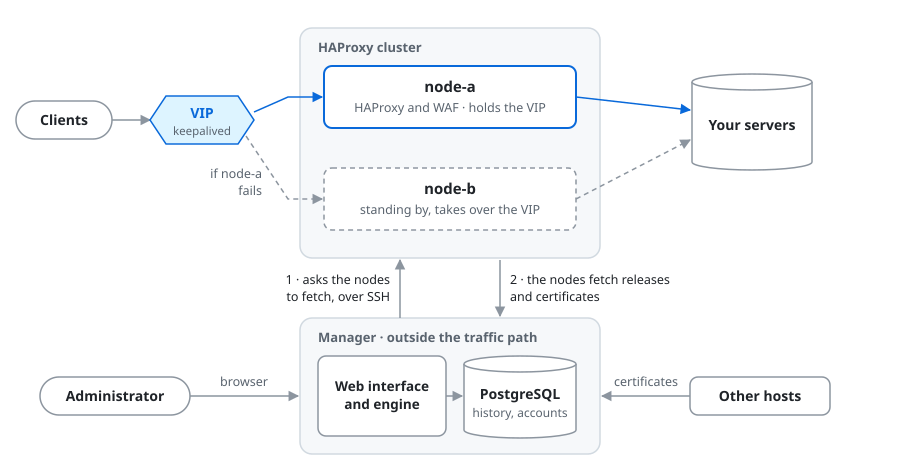

Haprion
Run small HAProxy clusters from one place - load balancing, failover, a WAF and certificates - without having to master HAProxy.
A hobby project for home labs and smaller companies, maintained best-effort. It has not reached 1.0 and is not yet declared ready for production. See Project status.
How an installation looks

What it does
Proxies and clusters
- HTTP, HTTPS and TCP objects, edited as drafts and published as versions
- deploys rolled out node by node, bound to the version you saw
- DNS load balancing through dnsdist, and syslog over UDP
- a virtual address carried by keepalived; draining and maintenance per server
Access and protection
- who may reach an object - by address, range, named network or country
- rules on path, method and headers, and rate limits per source
- a WAF: Coraza with the OWASP Core Rule Set, in log or block mode
Certificates
- issued from one form through ACME, with HTTP-01 or DNS-01
- enrollment from a Microsoft CA over NDES/SCEP, or import
- distributed to the nodes and to other hosts that fetch them
Operations
- status, metrics and a seven-day traffic log
- node backups, and restoring a node onto an empty VM
- OpenID Connect sign-in, and every change to a cluster recorded as a job
Install
A manager and one or more nodes, each with Ubuntu 26.04 or Debian 13. Add the project's signed apt
repository on every machine (sudo apt install curl first if the machine has no curl).
On Ubuntu 26.04:
sudo curl -fsSLo /usr/share/keyrings/haprion-archive-keyring.asc \
https://haprion.github.io/haprion/haprion-archive-keyring.asc
sudo tee /etc/apt/sources.list.d/haprion.sources >/dev/null <<'EOF'
Types: deb
URIs: https://haprion.github.io/haprion/
Suites: ubuntu26.04
Components: main
Signed-By: /usr/share/keyrings/haprion-archive-keyring.asc
EOF
sudo apt updateOn Debian 13:
sudo curl -fsSLo /usr/share/keyrings/haprion-archive-keyring.asc \
https://haprion.github.io/haprion/haprion-archive-keyring.asc
sudo tee /etc/apt/sources.list.d/haprion.sources >/dev/null <<'EOF'
Types: deb
URIs: https://haprion.github.io/haprion/
Suites: deb13
Components: main
Signed-By: /usr/share/keyrings/haprion-archive-keyring.asc
EOF
sudo apt updateThen, on the manager:
sudo apt install haprion-ui
sudo haprion-setupand on each node:
sudo apt install haprion-nodeThe quickstart goes on
from there to a site served by your HAProxy nodes. The repository key's fingerprint is
927422B0C5F005E0B710E4FFF30F5055A9FC0A53.